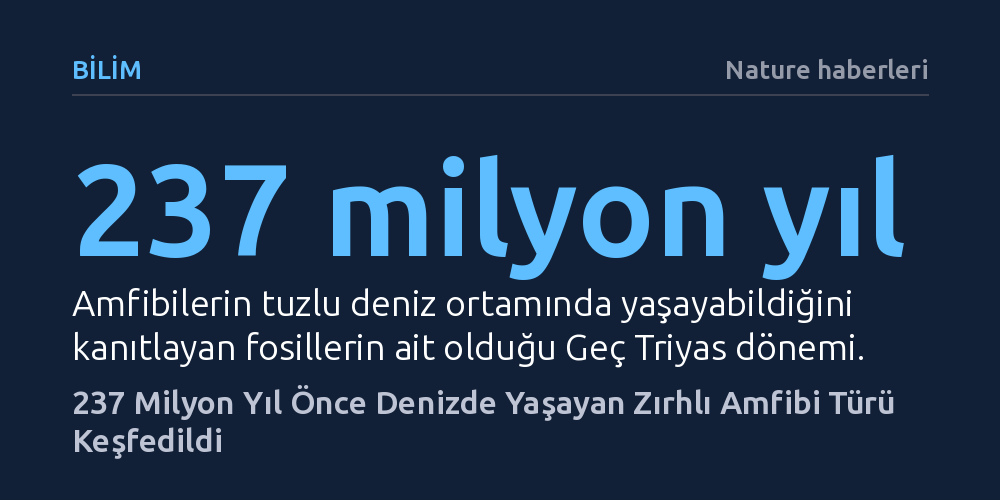

BILIM · Nature haberleri · 2026-10-27
Çin'de bulunan 237 milyon yıllık iki fosil, amfibilerin sanılanın aksine Geç Triyas döneminde denizlerde de yaşayabildiğini kanıtladı. Kemiklerdeki stronsiyum izotopları, 74 santimetre uzunluğundaki zırhlı türün doğrudan tuzlu deniz suyu içerek büyüdüğünü gösteriyor.
Amfibilerin geçirgen derileri sebebiyle sadece tatlı sularda yaşayabildiği yönündeki temel biyoloji bilgisini sarsarak deniz ortamına da uyum sağlayabildiklerini kanıtlıyor.

Çin’in Guizhou eyaletinde gün yüzüne çıkarılan iki yeni fosil, biyoloji ve paleontoloji dünyasında amfibilerin yaşam alanlarına dair bilinenleri kökünden sarsıyor. Yaklaşık 237 milyon yıl önce, yani Geç Triyas döneminde denizel çökellerin biriktiği bu bölgede bulunan kalıntılar, günümüz amfibilerinin ilkel akrabaları sayılan temnospondil grubuna ait daha önce bilinmeyen bir canlıyı ortaya koydu. Bilim insanlarının geçici olarak Gerrothorax maritimus adını verdiği bu tür, denizlerin tuzlu ortamında uzun süre yaşayabilen ilk amfibi örneklerinden biri olarak kayıtlara geçti.
Fosiller detaylı biçimde incelendiğinde, hayvanın yaklaşık 74 santimetre uzunluğunda olduğu, basık bir vücut formu taşıdığı ve bedeninin neredeyse bütünüyle kemiksi bir zırhla kaplandığı anlaşıldı. Günümüz amfibilerinin ince ve narin deri yapısıyla tezat oluşturan bu sert zırh tabakası, canlının antik deniz tabanında karşılaşabileceği yırtıcılara ve sert çevresel koşullara karşı geliştirdiği koruyucu bir adaptasyona işaret ediyor.
Paleontologlar denizel tortullarda tatlı su canlılarına ait fosiller bulduklarında, genellikle bu canlıların nehir akıntıları veya sel sularıyla karadan denize taşındığı ihtimalini değerlendirirler. Ancak Gerrothorax maritimus iskeletlerinin dönemin kıyı çizgilerinden ve kara kütlelerinden son derece uzakta, açık bir denizin tabanında bulunması bu tezi geçersiz kılıyor. İskeletlerin dağılmadan, anatomik bütünlüklerini neredeyse kusursuz biçimde korumuş olması da kalıntıların akıntılarla uzak mesafelere sürüklenmediğini gösteriyor.
Araştırma ekibi bu tespiti doğrulamak için fosil kemiklerinde biriken stronsiyum izotop oranlarını analiz etti. Stronsiyum elementi, canlının ömrü boyunca tükettiği suyun tuzluluk derecesini ve kimyasal yapısını kaydeden güvenilir bir jeokimyasal belirteçtir. Yapılan hassas ölçümler, kemiklerdeki izotop seviyelerinin dönemin deniz suyuyla birebir eşleştiğini ortaya koydu. Araştırmacılar makalede, bu bulgunun hayvanın "deniz suyu içerek büyüdüğü" anlamına geldiğini vurguluyor.
Modern kurbağalar, semenderler ve bacaksız amfibiler tuzlu ortamları tolere edemez; geçirgen deri yapıları nedeniyle tuzlu suyla temas ettiklerinde vücutlarındaki sıvıyı ozmotik dengesizlik yüzünden hızla kaybederler. Bu temel fizyolojik kısıt sebebiyle biyologlar, amfibilerin okyanus ve deniz ekosistemlerine hiçbir dönemde kalıcı olarak uyum sağlayamadığını kabul ederdi. Gerrothorax maritimus keşfi, antik amfibilerin bu biyolojik sınırı aşabilecek osmoregülasyon ve doku mekanizmalarına sahip olabileceğini göstererek evrimsel esnekliklerini ortaya koyuyor.
Geç Triyas döneminde denizel besin zincirlerine amfibilerin de dahil olduğunun anlaşılması, bu canlıların sadece göl, ırmak ve bataklıklarla sınırlı kalmadığını kanıtlıyor. Zırhlı amfibinin tuz dengesini biyolojik olarak nasıl kurduğu henüz tam olarak aydınlatılamamış olsa da keşif, omurgalıların karadan suya ve tatlı sudan tuzlu sulara geçiş macerasının bilinenden çok daha zengin olduğunu belgeliyor.